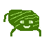
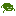
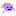

Congratulations, scientists! Your achievement of creating an animal, the Greeble, from only non-living materials will go down in history. But now, you must determine how to reproduce your creation.

In this simulation, you will control the reproductive characteristics of a population of greebles.
There are several options that you can change; hover over the options' titles to learn more about them.
Once you have chosen your settings, click "Start" to see how your greebles fare.
You can stop the simulation at any time to change your settings.
While following your greebles, keep an eye on the population graph to see how your settings affect the dynamics of your greebles' population.
Can you create a thriving population of greebles? Or will your greebles go extinct? The choice is yours!
Ready to play? Click the X in the top right corner.
ReproSim is an agent-based simulation. Each greeble is an individual agent that moves semi-randomly around the environment. Asexually-reproducing greebles have a chance to reproduce each time they move, while sexually-reproducing greebles must contact another greeble of the opposite sex to reproduce. Greebles must reach adulthood to reproduce, and the chance of reaching adulthood is determined by the genetic diversity and selection strategy of the population. Each greeble also has a chance to die each time they move, and overpopulation will cause greebles to die more often. The population graph tracks the total population of greebles over time.
UI developed using UIkit. Simulation developed using Konva.js. Graphs developed using Plotly.js. Some coding assistance was provided by Github Copilot, but most code was written, and all code was verified, by Alex Bruce.

Able to reproduce
Cannot yet reproduce